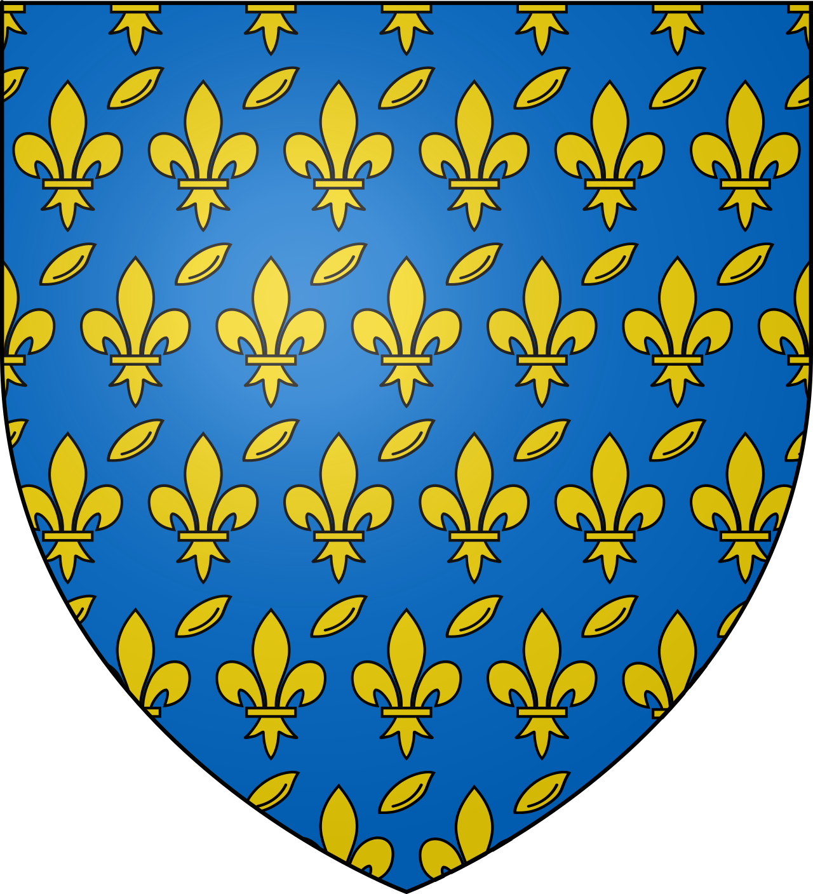
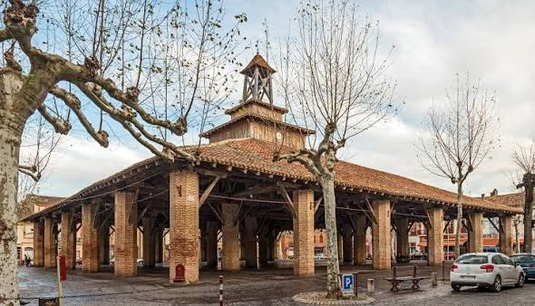

Grenade
La Bastide royale
sur la Garonne


⟹ Bastide · Halle · Garonne ⟸

Avant Grenade : une terrasse entre Garonne et Save. Le site, posé sur la rive gauche de la Garonne au confluent de la Save et de l'Hers-Mort, est fréquenté dès le Néolithique ; d'importants vestiges gallo-romains ont été découverts sur les bords du fleuve. Au Moyen Âge, ces terres de plaine appartiennent en grande partie aux moines cisterciens de l'abbaye de Grandselve.
1290 : la fondation d'une bastide royale. Le 15 octobre 1290, la construction d'une ville neuve commence à l'initiative des moines de Grandselve, qui avaient déjà fondé Beaumont-de-Lomagne une dizaine d'années plus tôt. La bastide naît d'un contrat de paréage entre l'abbé et le sénéchal de Toulouse Eustache de Beaumarchais, représentant du roi Philippe le Bel. Comme Fleurance (Florence) ou Cologne, elle reçoit le nom d'une grande cité européenne : Grenade, en signe d'ambition.
Un damier parfait. La ville s'organise en un plan orthogonal régulier d'environ 600 mètres sur 540, articulé autour de la place centrale et de sa halle. Les fondateurs prévoyaient plus de 3 000 maisons ; un millier seulement sont construites. Ce quadrillage, toujours lisible, fait de Grenade l'un des exemples les plus purs de bastide du Sud-Ouest.

La guerre de Cent Ans et les remparts. En 1341, Grenade obtient le droit de relever son enceinte. Murs, tours et portes protègent la bastide pendant des siècles ; le pont sur la Save est alors flanqué d'une tour et d'une porte de garde. Ces remparts disparaissent à la Révolution pour laisser place aux allées Alsace-Lorraine et Sébastopol.
Guerres de Religion et fondations religieuses. À la fin du XVIe siècle, les Grenadains s'allient aux Toulousains contre l'offensive protestante venue de Montauban. Pour affermir la ville catholique, un couvent de Capucins s'installe sur les quais de Garonne, puis les Ursulines fondent en 1626 un couvent voué à l'éducation des filles. Le 23 novembre 1622, Louis XIII fait son entrée solennelle avant de descendre la Garonne en bateau.
De la Révolution à l'Empire. En 1790, Grenade devient chef-lieu de district grâce à l'influence de Jacques de Cazalès. Les couvents sont vidés : celui des Ursulines devient hôpital militaire, l'église un « temple de la Raison ». En 1814, au moment de la bataille de Toulouse, les troupes de la coalition anglo-hispano-portugaise séjournent dans la ville, qu'elles pillent et rançonnent.
XIXe siècle : crues et électricité. En 1875, la grande crue de la Garonne détruit partiellement les hameaux de Saint-Caprais et du Rouanel. Quelques années plus tard, le moulin du Canalet, équipé de turbines hydrauliques, fait de Grenade dès 1887 l'une des premières villes électrifiées de France.
Une rivalité légendaire. La période révolutionnaire nourrit une rivalité tenace avec Beaumont-de-Lomagne, l'armée révolutionnaire de Toulouse menée par un Beaumontois ayant fait régner la terreur à Grenade. Cette « guerre des clochers » se perpétue aujourd'hui sur les terrains de rugby, à chaque derby Grenade–Beaumont.
Grenade aujourd'hui. Siège de la communauté de communes des Hauts Tolosans, Grenade est un pôle administratif, commercial et résidentiel majeur de l'axe Toulouse–Montauban. Elle conserve quatre monuments protégés : l'église (classée en 1951), la halle (classée en 1979), le pont sur la Save (inscrit en 1926) et l'ancien couvent des Ursulines (inscrit en 1988).
Grenade est une ville dessinée d'un seul geste : le damier de 1290, la halle au centre et la Garonne au pied des murs racontent encore l'ambition d'une bastide royale fondée pour durer.
Repère synthétique — L'Âme des RégionsPour aller plus loin — sources et documentation :
• Mairie de Grenade — histoire et patrimoine
• Communauté de communes des Hauts Tolosans — tourisme
• John Reps Collection — Bastides (Cornell University Library)
• Archives départementales de la Haute-Garonne
• Haute-Garonne Tourisme — découvrir le nord toulousain
• INSEE — Grenade
Grenade a vu naître le photographe Jean Dieuzaide (1921-2003), figure majeure de la photographie humaniste, et le maréchal d'Empire Catherine-Dominique de Pérignon (1754-1818). Jacques de Cazalès (1752-1805), brillant orateur royaliste de l'Assemblée constituante, en est également originaire, comme l'abbé Bertrand Capmartin de Chaupy (1720-1798), archéologue qui situa la villa d'Horace.
L'amiral Georges Cabanier (1906-1976), commandant du sous-marin mouilleur de mines Rubis et Compagnon de la Libération, est né à Grenade, qui lui a dédié une rue. Le club de rugby Grenade Sports, fondé en 1920, a formé plusieurs joueurs de haut niveau, dont l'international François Cros.
Les fêtes de Grenade, le week-end du 15 août, investissent la halle, les quais et les berges de la Save. L'année est aussi rythmée par le festival de musiques actuelles Grenad'In, le week-end médiéval de novembre, les courses de l'hippodrome de Marianne et la grande foire de la Saint-Luc. Les armoiries de la ville — d'azur semé de grains de froment et de fleurs de lys d'or — rappellent sa vocation agricole et sa fondation royale.
Accès : Grenade se situe à 25 km au nord-nord-ouest de Toulouse et à une vingtaine de kilomètres de l'aéroport de Toulouse-Blagnac. La gare la plus proche est celle de Castelnau-d'Estrétefonds ; la ligne express Hop!302 relie les quais de Garonne au métro Borderouge.
Office de tourisme : L'Office de tourisme des Hauts Tolosans accueille les visiteurs dans la bastide et propose, notamment l'été, des visites guidées de la ville et des expositions.
Conseil de visite : venez un samedi matin pour voir la halle animée par le marché, puis prolongez par la bastide et les berges de la Save ; en octobre, ne manquez pas la foire de la Saint-Luc.